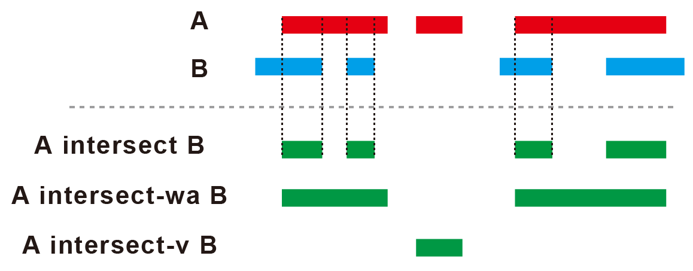

EpigenomeChef manual
23/12/18 11:33
Outline

EpigenomeChef is a platform of systematic epigenome data analysis
which can automatically detect, integrate, and visualize the epigenetic
information and its interaction with transcriptome without
bioinformatics skills.
Data downloaded from ChIP-atlas, a database
of ChIP-seq, ATAC-seq, and Bisulfite-seq, can be used as input.
In
addition, it easily performed the integrative analysis with
transcriptome data by uploading the results file of differentially
expressed gene (DEG) analysis obtained from RNA-seq data.
Web version (for tutorial)
https://imeg-ku.shinyapps.io/EpigenomeChef_web/.
This version is a web application hosted on a Shinyapps.io server.
Due to
server limitations, including capacity constraints and the number of
simultaneous connections, and unavailability for HOMER (motif analysis),
I recommend using the Docker version.
The web version has
limitations mentioned above but has ample capacity for venn diagram
analysis, functional enrichment analysis, peak annotation, and
integrative analysis of epigenome-transcriptome based on regulatory
potential.
Installation of Docker version
EpigenomeChef can be used by installing the Docker image.
0. (If you do not have a Docker environment) Install Docker
1. Run the following command (Once you run it, you won’t need it
again)
docker pull omicschef/epigenomechef:v1.1.2
2. Launch EpigenomeChef on the browser
Method 1: command line
docker run --rm -p 3838:3838 omicschef/epigenomechef:v1.1.2
## Option: run using bind mount
## you can bind folder containing bigwig files to the container.
## docker run --rm -p 3838:3838 -v ${path/to/directory}:/srv/shiny-server/EpigenomeChef/Volume omicschef/epigenomechef:v1.1.0
## e.g. When you want to select current directory, you can use the following command:
docker run --rm -p 3838:3838 -v ${PWD}:/srv/shiny-server/EpigenomeChef/Volume omicschef/epigenomechef:v1.1.0Access http://localhost:3838.
Method 2: Docker Desktop
Contact
If you need help, please create an issue on Github or contact us.
Design
EpigenomeChef consists of the following sections:
Pair-wise (differential accessible/binding region for pair-wise comparison)
Venn diagram (Visualization of the intersections of genomic loci)
Clustering (Dimension reduction for clustering, k-means clustering analysis)
Peaks of interest (Functional and motif analysis of interest of genomic loci)
More（Other useful functions, Reference, etc）
To establish the versatility of EpigenomeChef, we divided its core
functions into four sections, which enabled us to handle various types
of input files.
The user-interface consists of
Menu, Setting panel, Tab
panel.
Each section can be moved by clicking on a menu
button.
The input files can be uploaded to the setting panel.
Epigenome analysis was started automatically by clicking the tab panel
in the output panel.
Please explore the app’s features using example
data by clicking the example button on the setting
panel.

Common rules and important notice for input file
File extension
Coverage data:
- BigWig file (.BigWig or .bw)
- Bam file (.bam) (option for “Pair-wise” section)
Peak call data:
- narrowPeak file (.narrowPeak)
- bed file (.bed)
BigWig format
BigWig file must be normalized (e.g. Reads per million (RPM/CPM)).
File names of BigWig (or Bam) files
File names are used as sample names in output figures.
Do not use
“/”, “:”, and ” “(space) in file names.
Simple file names are
recommended, as long names adversely affect creating figures.
The
replication number is represented by the underline “”.
Do not
use the underline ”” for anything else.
File names of peak call and bed files
“Pair-wise”, “Clustering”
Any file names do not affect the analysis.“Venn diagram”, “Peaks of interest”, Bedtools
File names are used as sample names in output figures.
Simple file names are recommended, as long names adversely affect creating figures.
Notes on uploading files
Files in different folders cannot be uploaded at the same time.
Put the files you want to upload at the same time in the same folder.
Common rules and important notice for the output file
saving data
The table data and graphs were saved by pressing the download button.
The table data are saved as a tab-separated txt file (. txt), the data
of genomic loci are saved as a bed file (.bed), and the graphs are saved
as a PDF file that can be edited by Adobe Illustrator.
Multiple
files are saved in zip format only in the HOMER report
in the tab panel of HOMER.
Adjusting the plot size
You can change the figure size by adjusting the “Output plot size
setting for pdf” in the Setting panel.
The parameters can be
adjusted when adjacent characters overlap in the graph or when the
margins of the graph are too large.
If the value of the parameter is
zero, it is saved at the default size.
The default size depends on
the type of graph. For details, please refer to the pop-up in the
application.
Pair-wise
“Pair-wise” detects and visualizes differential peak regions. This function executes a series of pairwise analyses such as “differential region detection”, “clustering analysis”, “Function and motif enrichment analysis (GREAT and HOMER, respectively)”, and “Integrative analysis with RNA-seq”.
Setting

Input format
The most important parameters are the following.
- input: “BigWig file” or “Bam file”
- Genomic region: “Genome-wide” or “Promoter”
Input
In the case of BigWig file
BigWig file must be normalized (e.g. Reads per million (RPM/CPM)).
The statistical analysis for pair-wise comparison depends on limma.In the case of Bam file
Select “single-end” or “paired-end”.
The statistical analysis for pair-wise comparison depends on DESeq2.
In the case that the number of mapped reads in each sample is almost the same, DESeq2 analysis is more accurate than limma analysis. On the other hand, In the case that the number of mapped reads in each sample is different, limma analysis is recommended.Count file + BigWig files
This option can only be used if you have previously performed analysis using “Pair-wise” and obtained a count file.
Utilizing this mode allows you to skip the step of extracting count data from the BigWig file.
Type: Select Normalized count or Raw count based on the conditions for which the count file was created. Choose Normalized count if the input is a BigWig file and Raw count if the input is a Bam file.
Please ensure that the settings for Genomic region and Filter match the conditions used in previous analyses.
If you intend to create peak patterns or track plots, you will also need to upload the BigWig file.
Genomic region
Genome-wide
Peak call files are required.
Upload all peak calls files corresponding to the uploaded BigWig files.
To analyze the reproducible peaks, peak regions that are commonly detected in more than two files are selected, and then count data of such selected regions is created.Filter
Reproducible peaks: This mode extracts only the reproducible peak call regions for each condition (regions called as peaks in at least n = 2 conditions).
For example:
X: A_1 no, A_2 no, B_1 yes, B_2 yes → reproducible
Y: A_1 yes, A_2 no, B_1 yes, B_2 no → NOT reproducible
Z: A_1 yes, A_2 yes, B_1 no, B_2 no → reproducible
In the case of X and Z genomic regions, the peak intensity is extracted and quantified from the BigWig files.
ALL peaks: This mode quantifies all regions that have been called as peaks.
Promoter
Peak call files are not required.
Select the ranges of promoter region from TSS (default: upstream = 500 bp, downstream = 500 bp).
Select the appropriate dataset species.
Please follow the rules described in “Common rules and important
notice for output file” for the file names to be uploaded.
Species
The following analysis is performed by selecting the dataset species (reference).
- Analysis of promoter region
- Trackplot, annotation, GREAT, HOMER, with RNA-seq
Cut-off conditions
Two types of thresholds can be set: fold change and
FDR.
Output
Input Data
The file names of uploaded files are displayed.
After
creating the count matrix, the count data is displayed.
-
Sample order
You can rearrange the order of BigWig
files.
Please note that drag-and-drop functionality is not available. To
reorder the files, delete the text, and re-enter them in the desired
order for analysis.

Result overview
Clustering analysis, volcano plot, heatmap
Three types of clustering analyses are performed: principal component
analysis (PCA), multidimensional scaling (MDS), and hierarchical
clustering with the ward.D2.

Volcano plot and heatmap are displayed to
visualize differential accessible/binding regions.
If you click a
genomic locus of interest in the “result” table, the corresponding dot
in the volcano plot becomes green.
Regression
There are two types of regression methods.
least
squares: Classical statistical methods in general.
robust: Robust estimation is effective when the data
includes outliers.
Trackplot panel
If you click a genomic locus of interest in the
result table, the trackplot that shows the selected
locus and its nearest gene is displayed.
A red highlight shown in
the trackplot is the selected genomic locus. The peak height in the
trackplot can be adjusted with peak range. If you want
to display additional coverage data in the trackplot, you can upload the
data from select additional bigwig files. 
In the volcano plot, you can enclose
regions of interest on the plot to display a table containing
information solely for those genomic regions.

Red_peaks and Blue_peaks panels
The bed file of the differential peak regions (red peaks: higher
regions in condition 2, blue peaks: higher regions in condition 1) is
displayed.
You can use the bed file as an input file for
Venn diagram, Clustering, and
Peaks of interest sections.
Annotation
The pie charts that show the annotation of differential peak regions
are displayed.
The following three levels of the pie chart are
displayed.
Gene Level
Promoter, Downstream, Gene body, Distal intergenicExon/Intron/Intergenic
Exon, Intron, IntergenicExon Level
5’ UTR, 3’ UTR, CDS, Other exon

Peak pattern
Peak heatmap and line plot are displayed. The peak heatmap shows the
signal intensity of each differential peak. The line plot shows the
average signal intensity of differential peaks. If you want to display
additional data, you can upload the data from select additional
bigwig files.

GREAT
GREAT (Genomic Regions Enrichment of Annotations Tool)-based
enrichment analysis detects the function of differential peak
regions.
The following gene sets are available for analysis:
MSigDB
hallmark gene
KEGG
Reactome
PID
(Pathway Interaction Database)
BioCarta
WikiPathways
GO (biological process, cellular
component, and molecular function)
Human phenotype ontology
DoRothEA regulon
(activator)
DoRothEA regulon
(repressor)
Transcription
factor targets
miRNA
target
note: DoRothEA regulon is recommended
for the prediction of transcription factors.
This analysis depends on rGREAT.

HOMER
HOMER (Hypergeometric Optimization of Motif EnRichment)-based motif
analysis detects DNA-binding motifs enriched in differential peak
regions.
Install HOMER reference
HOMER reference of the species (select from the setting panel) can be installed. If the HOMER reference for your dataset species has not been installed in the container yet, you need to press the ‘Install HOMER reference’ button.
Type of enrichment analysis
“known motif”: turns off searching for de novo motifs for saving time
“known + unknown motif”: searching for both known and de novo
motifs
Type of the region for motif finding
“given (exact size)”: Scanning the entire regions of each
differential peak region. In the case of the analysis for the broad
peaks such as histone modification, this mode is effective.
“custom
size”: Scanning the selecting size from the peak center (default: 200).
In the case of the analysis of the sharp peaks such as ATAC-seq and
DNA-binding transcription factors, this mode is effective.
Background sequence
“ramdom”: Creating a background from the genome based on the GC
content and scan size of the target sequences.
“peak call files”:
Using peak regions, that exclude the analytic region, as a background.
(e.g. In the case of the analysis of “up region”, NS regions and down
region are used as a background.)
It is possible that the “peak
call files” mode can predict a more specific motif rather than the
“random” mode.
Download homer report
The folder that contains HOMER results can be downloaded.

Combined Heatmap
This function simultaneously visualizes count data and log2FoldChange
values from RNA-seq, as well as the peak patterns of ChIP-seq and
ATAC-seq, in a heatmap for Up and Down peaks obtained from “Pair-wise”
section.
Press the START button to initiate the analysis.

with RNAseq
The integrative analysis with transcriptome is performed by uploading
the DEG result file from RNA-seq analysis.
Two types of RNA-seq data
can be used as inputs.
Raw_count (2 conditions)
The analysis can be performed with raw count data if the following conditions are fulfilled:
- A file consists of only two groups of data to be analyzed.
- The replication number is represented by the underline “_”.
- Do not use the underline "_" for anything else. DEG analysis is performed using DESeq2.

DEG_Result from pair-wise analysis
The analysis can only be performed with the DEG result file if the following conditions are fulfilled:
- File extension: Tab-separated txt (.txt), comma-separated csv (.csv), or Excel (.xlsx) files can be accepted.
- The first column must be a gene symbol or ENSEMBL ID
- The file must contain the following columns: "log2FoldChange" and "padj"If the file fulfills the above rules, you can use not only the result
file from bulk RNA-seq but also from scRNA-seq.
Name of
condition 1/2: you can change the condition names.
Note: Log2FoldChange is calculated as Log2(A/B) in the
“A vs B” scenario, so “Up” corresponds to negative values. If you are
using a DEG result file obtained from a source other than RNAseqChef,
please pay attention to the interpretation of positive and negative
values.

Regulatory Potential (RP)-based integrative analysis
In the case of epigenome (differential peak regions) analysis, there
are the following situations:
- multiple regions are localized near the single gene locus.
- Both up and down regions are localized near the single gene locus.
- Single region is localized near the multiple gene loci
To combine epigenome information with gene expression data, it is
first necessary to integrate multiple epigenetic information for each
gene into a single score. This process is required for establishing the
one-to-one relationship between epigenome information and gene
expression for each gene. In EpigenomeChef, the principle of
Regulatory Potential (RP) is accepted to integrate
multiple epigenetic information for each gene.
RP score is
calculated so that the closer the peak is to the TSS, the higher the
score, and the farther from the TSS, the lower the score.
In the
case of ‘Pair-wise’ section, the improved RP for pair-wise analysis is
introduced.
The first improvement involves using the fold change
information from the analysis of differential peak regions, allowing for
the weighting of significantly altered peaks, even if they are located
far from the TSS.
The second improvement pertains to the definition
of RP for negative values, enabling evaluation of both ‘Up peaks’ and
‘Down peaks’.
The maximum distance from TSS that affect the RP score
can be changed with Regulatory range (distance (kb) from
TSS) (default: 100 kb).
The cutoff condition of DEGs from
RNA-seq can be changed with Fold change cutoff for RNA-seq
data and FDR cutoff for RNA-seq data (default:
fold change = 1.5, fdr = 0.05).
Mode
There are two modes for RP calculation.
Nearest:
Each peak is linked to a single nearest gene.
Gene
scan: Each peak is linked to multiple genes within the
indicated distance.

Boxplot
Genes are categorized based on the RP score (RP < -1, -1 < RP
< -0.1, -0.1 < RP < -0.01, -0.01 < RP < 0, others, 0 <
RP < 0.01, 0.01 < RP < 0.1, 0.1 < RP < 1, and RP > 1).
A boxplot displaying the log10FoldChange of genes in each group is
presented.
You can obtain the figure (.pdf), the result of
statistics (.txt), and the gene and bed list categorized by RP scores
(.txt and .bed) by clicking the ‘Download boxplot (.pdf, .txt, and
.bed)’ button. A multiple-comparison test is conducted using Tukey-HSD.
* p < 0.05, ** p < 0.01, *** p < 0.001
This plot overviews
the contribution of epigenetic alteration to gene expression change.

KS plot
This function arranges the genes in descending order of RP score and
then compares the distribution of the three groups (up DEG, down DEG,
and NS).
The statistic test is performed by Kolmogorov-Smirnov
tests.
This plot overviews the correlation between gene expression
and RP score (epigenome alteration of interest).

Barplot
The following barplots are displayed:
- above: the histogram showing the count of associated peaks for each category gene (up DEG, down DEG, and NS).
- below: the histogram showing the count of associated genes for each category peak (up peak and down peak).
Note: In ‘Nearest mode’, each category peak must be
associated with only one gene (below histograms). 
Result table panel
The result table that links epigenome analysis to transcriptome is
displayed.
e.g. “up-up (both upregulated genes with RNA and
epigenome)” and “down-down (both downregulated genes with RNA and
epigenome)”. You can select it from
Group(Epigenome:RNA).
The bed files that contain
the genomic regions of each group can be downloaded.
The downloaded
bed files can be used as input files for the sections of Venn
diagram,Clustering, and Peaks of
interest.
If you click a gene of interest in the result
table, the trackplot that shows the selected regions and its nearest
gene is displayed in the Trackplot panel.

Functional enrichment analysis panel
In this analysis, enrichment analysis for the gene list (similar to
RNA-seq analysis) is conducted (NOT GREAT).
Category: You can select groups of interest from
RP status (from boxplot) or Relationship
(Epigenome:RNAseq).
Gene set: You can
select gene sets for enrichment analysis.
The analysis depends on ClusterProfiler.

Venn diagram
Venn diagram detects and visualizes the overlaps of genomic loci by uploading multiple bed files. By combining it with bigwig files and a DEG result file, the peak pattern, annotation, trackplot, and correlation with transcriptome are automatically analyzed and visualized to dissect the intersection of interest.
Setting

Input format
Input
Bed files
Bed files must be required in this section.
File names are used as sample names in output figures.
Simple file names are recommended, as long names adversely affect creating figures.。
The maximum number of uploads is fiveBigWig files
BigWig files are required for trackplot and peak pattern including peak heatmap and line plot. If not necessary, BigWig files are not required.Sample order
You can rearrange the order of BigWig files.
Please note that drag-and-drop functionality is not available. To reorder the files, delete the text and re-enter them in the desired order for analysis.
Species
The following analysis is performed by selecting the dataset species (reference).
- trackplot, annotation, GREAT, HOMER, with RNAseq
Output
Venn diagram
The overlap of the uploaded bed files is detected and visualized.

Intersection table
The table data of the selected intersection is displayed.
You can
download bed files of all intersections.
Annotation
In the case that Species is selected, peak
distribution is displayed.
The annotation of the selected
intersection is displayed.
The following three levels of the pie
chart are displayed.
Gene Level
Promoter, Downstream, Gene body, Distal intergenicExon/Intron/Intergenic
Exon, Intron, IntergenicExon Level
5’ UTR, 3’ UTR, CDS, Other exon
selected intersect data panel
The table data that contains annotation of the selected intersection
is displayed.
The text file that contains the annotation such as the
nearest genes can be downloaded.
Trackplot panel
If you click the genomic locus of interest in the selected
intersect panel, the trackplot that shows the selected locus
and its nearest gene is displayed.
The red highlight in the
trackplot shows the selected genomic locus.
The peak height in the
trackplot can be changed with peak range.
If you
want to display additional data, you can upload additional bigwig files
from select additional bigwig files.
Peak pattern
The peak pattern of the selected intersection from Select
intersect is analyzed.
The hyphen “-” means the
overlap.
e.g. The analysis of A.bed and B.bed
A: Genomic loci of
A that are not overlapped with B.
B: Genomic loci of B that are not
overlapped with A.
A-B: Genomic loci of the overlap between A and B.
Peak heatmap and line plot
In the case that bigwig files are uploaded, peak heatmap and line
plot are displayed.
If you want to display additional data, you can
upload bigwig files from select additional bigwig
files.

Lineplot of intersections (comparison between intersections)
This plot displays the average values of intersections obtained for each uploaded BigWig file. It allows you to compare peak heights within the intersection regions of a single BigWig file.
Lineplot of intersections (comparison between bigwig)
This plot enables you to compare the peak heights within the
intersection regions for all the uploaded BigWig files.

GREAT
GREAT (Genomic Regions Enrichment of Annotations Tool)-based
enrichment analysis identifies the function of the selected intersection
in the venn diagram that can be selected from Select
intersect.
The following gene sets are available for
analysis:
MSigDB
hallmark gene
KEGG
Reactome
PID
(Pathway Interaction Database)
BioCarta
WikiPathways
GO (biological process, cellular
component, and molecular function)
Human phenotype ontology
DoRothEA regulon
(activator)
DoRothEA regulon
(repressor)
Transcription
factor targets
miRNA
target
note: DoRothEA regulon is recommended
for the prediction of transcription factors.
This analysis depends on rGREAT.

HOMER
HOMER (Hypergeometric Optimization of Motif EnRichment)-based motif
analysis identifies the DNA-binding motif of the selected intersection
in the venn diagram that can be selected from Select
intersect.
Install HOMER reference
HOMER reference of the species (select from the setting panel) can be installed. If the HOMER reference for your dataset species has not been installed in the container yet, you need to press the ‘Install HOMER reference’ button.
Type of enrichment analysis
“known motif”: turns off searching for de novo motifs for saving
time.
“known + unknown motif”: searching for both known and de novo
motifs
Type of the region for motif finding
“given (exact size)”: Scanning the entire regions of each genomic
locus. In the case of the analysis for the broad peaks such as histone
modification, this mode is effective.
“custom size”: Scanning the
selecting size from the peak center (default: 200). In the case of the
analysis of the sharp peaks such as ATAC-seq and DNA-binding
transcription factors, this mode is effective.
Background sequence
“ramdom”: Creating a background from the genome based on the GC
content and scan size of the target sequences.
“peak call files”:
Using peak regions, that exclude the analytic region, as a
background.
If you click the “peak call files”, the window for
uploading bed files appears. It is possible that the “peak call files”
mode can predict a more specific motif rather than the “random”
mode.
Download homer report
The folder that contains HOMER results can be downloaded.

Combined Heatmap
This function simultaneously visualizes count data and log2FoldChange
values from RNA-seq, as well as the peak patterns of ChIP-seq and
ATAC-seq, in a heatmap for Up and Down peaks obtained from “Pair-wise”
section.
Please make sure to select the genomic regions of interest
from Select intersection to create the heatmap.
Press the START button to initiate the analysis.
with RNAseq
The integrative analysis with transcriptome is performed by uploading
the DEG result file from RNA-seq analysis.
Three types of RNA-seq
data can be used as inputs.
Raw_count (2 conditions)
The analysis can be performed with raw count data if the following conditions are fulfilled:
- A file consists of only two groups of data to be analyzed.
- The replication number is represented by the underline “_”.
- Do not use the underline "_" for anything else. DEG analysis is performed using DESeq2.
DEG_Result from pair-wise analysis
The analysis can only be performed with the DEG result file if the following conditions are fulfilled:
- File extension: Tab-separated txt (.txt), comma-separated csv (.csv), or Excel (.xlsx) files can be accepted.
- The first column must be a gene symbol or ENSEMBL ID
- The file must contain the following columns: "log2FoldChange" and "padj"If the file fulfills the above rules, you can use not only the result
file from bulk RNA-seq but also from scRNA-seq.
Name of
condition 1/2: you can change the condition names.
Note: Log2FoldChange is calculated as Log2(A/B) in the
“A vs B” scenario, so “Up” corresponds to negative values. If you are
using a DEG result file obtained from a source other than RNAseqChef,
please pay attention to the interpretation of positive and negative
values.
Gene_list
In this mode, the format requirements depend on the number of files
to be uploaded. Single file upload:
The first
column is gene name.
The second and subsequent columns do not affect
the analysis.
Multiple files upload:
The first
column is gene name
The second and subsequent columns do not affect
the analysis.
File names are used as group names.
Example:
single file upload
Regulatory Potential (RP)-based integrative analysis
In the epigenome analysis, there is the case that multiple peaks are
associated with a single gene.
To combine epigenome information with
gene expression data, it is first necessary to integrate multiple
epigenetic information for each gene into a single score. This process
is required for establishing the one-to-one relationship between
epigenome information and gene expression for each gene.
In
EpigenomeChef, the principle of Regulatory Potential
(RP) is accepted to integrate multiple epigenetic information
for each gene.
RP score is calculated so that the closer the peak is
to the TSS, the higher the score, and the farther from the TSS, the
lower the score.
The maximum distance from TSS that affect the RP
score can be changed with Regulatory range (distance (kb) from
TSS) (default: 100 kb).
The cutoff condition of DEGs from
RNA-seq can be changed with Fold change cutoff for RNA-seq
data and FDR cutoff for RNA-seq data (default:
fold change = 1.5, fdr = 0.05).

Mode
There are two modes for RP calculation.
Nearest:
Each peak is linked to a single nearest gene.
Gene
scan: Each peak is linked to multiple genes within the
indicated distance.
Boxplot
Genes are categorized based on the RP score (Others, 0 < RP <
0.01, 0.01 < RP < 0.1, 0.1 < RP < 1, 1 < RP < 2, and 2
> RP ). A boxplot displaying the log10FoldChange of genes in each
group is presented.
You can obtain the figure (.pdf), the result of
statistics (.txt), and the gene and bed list categorized by RP scores
(.txt and .bed) by clicking the ‘Download boxplot (.pdf, .txt, and
.bed)’ button. A multiple-comparison test is conducted using Tukey-HSD.
* p < 0.05, ** p < 0.01, *** p < 0.001
This plot overviews
the contribution of epigenetic alteration to gene expression change.

Barplot
The following barplots are displayed.
- above: the classification of DEGs based on RP scores (up: RP >0
and NS: others)
- below: the classification of RP > 0 genes based on their
expression levels (up DEG, down DEG, and NS)

KS plot
This function arranges the genes in descending order of RP score and
then compares the distribution of the three groups (up DEG, down DEG,
and NS).
The statistic test is performed by Kolmogorov-Smirnov
tests.
This plot overviews the correlation between gene expression
and RP score (epigenome alteration of interest).

Result table panel
The result table that links epigenome to transcriptome is
displayed.
e.g. “both upregulated genes with RNA and epigenome” and
“both downregulated genes with RNA and epigenome”. The table data
selected from Group(Epigenome:RNA) is displayed.
The bed file can be downloaded for using it in the section of
Clustering and Peaks of interest
If you click a gene of interest in the result table panel, the trackplot
that shows the selected genes and genomic loci are displayed in the
trackplot panel.

Functional enrichment analysis panel
In this analysis, enrichment analysis for the gene list (similar to
RNA-seq analysis) is conducted (NOT GREAT).
Category: You can select groups of interest from
RP status (from boxplot) or Relationship
(Epigenome:RNAseq).
Gene set: You can
select gene sets for enrichment analysis.
The analysis depends on ClusterProfiler.
Clustering
Clustering performs the clustering analysis of uploaded bigwig
files.
There are two purposes for this section.
- PCA, MDS, dendrogram, and correlation plot that evaluates their similarity.
- k-means clustering for dissecting genomic loci of interest in detail.
Setting

Input format
There is an important parameter as below.
- Genomic region: “Genome-wide” or “Promoter”
Genomic region
Genome-wide
Bed files are required.
In the case that the purpose is an overview of data, the peak call files corresponding to all uploaded bigwig files are required. (Note: there is no filtering function like “Pair-wise” section. All genomic loci in uploaded bed files are analyzed.)
In the case that the purpose is a k-means clustering analysis, the bed file that is obtained from the sections of “Pair-wise” and “Venn diagram” can be used. The only genomic loci in the bed file are analyzed.
(Note: The maximum number of genomic loci that can be analyzed is 10,000. )Filter
Reproducible peaks: This option extracts only the reproducible peak call regions for each condition (regions called as peaks in at least n = 2 conditions).
However, for samples where n = 1, all peak call regions are extracted. 例:
X: A_1 no, A_2 no, B_1 yes, B_2 yes, C_1 no → reproducible
Y: A_1 yes, A_2 no, B_1 yes, B_2 no, C_1 no → NOT reproducible
Z: A_1 yes, A_2 yes, B_1 no, B_2 no, C_1 yes → reproducible
C: A_1 no, A_2 no, B_1 no, B_2 no, C_1 yes → C is handled as reproducible since C_1 is n = 1.
For X, Z, and C genomic regions, peak intensity is extracted and quantified from the BigWig files.
ALL peaks: This mode quantifies all regions that have been called as peaks.

Promoter
Bed files are not necessary.
The range of promoter region can be changed (default: upstream = 500 bp, downstream = 500 bp).
You can extract the promoter region of genes of interest by uploading a gene list file, and then can analyze them.
Select the appropriate dataset Species.
Please follow the rules described in “Common rules and important
notice for output file” for the file names to be uploaded.
Species
The following analysis is performed by selecting the dataset species (reference).
- trackplot, annotation, GREAT, HOMER, with RNAseq
Cut-off conditions
Two types of thresholds can be set: fold change and
FDR.
Output
Input Data
The uploaded file names are displayed.
After creating a count
matrix, the count data is displayed.
- Sample
order
You can rearrange the order of BigWig files.
Please note that drag-and-drop functionality is not available. To
reorder the files, delete the text, and re-enter them in the desired
order for analysis.

Result overview
Three types of clustering analysis are performed: Principal Component
Analysis (PCA), Multi-Dimensional Scaling (MDS), and ward.D2
dendrogram.
Pearson’s correlation is calculated and the correlation
plot is displayed.

k-means clustering
k-means clustering is performed.
Filter 1 (FDR cut-off)
Statistical analysis (Limma-trend) will be conducted if there is a
sample number (n) of at least 1 for at least one condition.
If the
uploaded data lacks replicates, this analysis will be skipped.

Filter 2 (Fold change cut-off)
Choose the two groups from Select a pair for fold change
cut-off for which you want to apply the Fold Change
cut-off.
- k-means number
Set the number of clusters. - Order of clusters on heatmap
You can change the order of clusters on the heatmap.
You can get bed files of all clusters from ‘Download bed files of all clusters’.
You can analyze the clusters of interest by selecting them from
cluster_list.
In the case of selecting multiple
clusters, it analyzes all clusters as the same cluster (not analyze each
cluster indivisually).
Peak pattern
Peak heatmap and line plot of the selecting cluster are
displayed.
If you want to display additional data, you can upload
bigwig files from select additional bigwig files.

Trackplot panel
If you click the genomic locus of interest in the Custom
cluster panel, the trackplot that shows the selected locus and
its nearest gene is displayed.
The red highlight in the trackplot
shows the selected genomic locus.
The peak height in the trackplot
can be changed with peak range.
If you want to
display additional data, you can upload additional bigwig files from
select additional bigwig files.

Peaks of interest
Peaks of interest performs the functional and motif enrichment
analysis by uploading bed files.
By using bed files from the Venn
diagram and k-means clustering analysis, it detects and compares the
functions and motifs of the identified intersection and clusters.
Setting

Input format
Input
- Bed files
Bed files must be required.
File names are used as sample names in output figures.
Simple names are recommended, as long names adversely affect creating figures.
Species
Selecting the appropriate dataset “Species” must be required.
Output
Input list
The uploaded file names are displayed.

GREAT
GREAT (Genomic Regions Enrichment of Annotations Tool)-based
enrichment analysis identifies the function of the uploaded files.
The following gene sets are available for analysis:
MSigDB
hallmark gene
KEGG
Reactome
PID
(Pathway Interaction Database)
BioCarta
WikiPathways
GO (biological process, cellular
component, and molecular function)
Human phenotype ontology
DoRothEA regulon
(activator)
DoRothEA regulon
(repressor)
Transcription
factor targets
miRNA
target
note: DoRothEA regulon is recommended
for the prediction of transcription factors.
The analysis depends on rGREAT.

HOMER
HOMER (Hypergeometric Optimization of Motif EnRichment)-based motif
analysis identifies DNA-binding motif enriched in each uploaded bed
file.
Install HOMER reference
HOMER reference of the species (select from the setting panel) can be installed. If the HOMER reference for your dataset species has not been installed in the container yet, you need to press the ‘Install HOMER reference’ button.
Type of enrichment analysis
“known motif”: turns off searching for de novo motifs for saving
time.
“known + unknown motif”: searching for both known and de novo
motifs
Type of the region for motif finding
“given (exact size)”: Scanning the entire regions of each genomic
locus. In the case of the analysis for the broad peaks such as histone
modification, this mode is effective.
“custom size”: Scanning the
selecting size from the peak center (default: 200). In the case of the
analysis of the sharp peaks such as ATAC-seq and DNA-binding
transcription factors, this mode is effective.
Background sequence
“ramdom”: Creating a background from the genome based on the GC
content and scan size of the target sequences.
“peak call files”:
Using peak regions, that exclude the analytic region, as a
background.
If you click the “peak call files”, the window for
uploading bed files appears. It is possible that the “peak call files”
mode can predict a more specific motif rather than the “random”
mode.
Download homer report
The folder that contains HOMER results can be downloaded.
Combined Heatmap
This function simultaneously visualizes count data and log2FoldChange
values from RNA-seq, as well as the peak patterns of ChIP-seq and
ATAC-seq, in a heatmap for Up and Down peaks obtained from “Pair-wise”
section.
You must upload at least one BigWig file into
Select bigwig files (red).
Press the START button
to initiate the analysis.

with RNAseq
The integrative analysis of the uploaded peak regions with
transcriptome is performed by uploading the DEG result file from RNA-seq
analysis.
Raw_count (2 conditions)
The analysis can be performed with raw count data if the following conditions are fulfilled:
- A file consists of only two groups of data to be analyzed.
- The replication number is represented by the underline “_”.
- Do not use the underline "_" for anything else. DEG analysis is performed using DESeq2.
DEG_Result from pair-wise analysis
The analysis can only be performed with the DEG result file if the following conditions are fulfilled:
- File extension: Tab-separated txt (.txt), comma-separated csv (.csv), or Excel (.xlsx) files can be accepted.
- The first column must be a gene symbol or ENSEMBL ID
- The file must contain the following columns: "log2FoldChange" and "padj"If the file fulfills the above rules, you can use not only the result
file from bulk RNA-seq but also from scRNA-seq.
Name of
condition 1/2: you can change the condition names.
Note: Log2FoldChange is calculated as Log2(A/B) in the
“A vs B” scenario, so “Up” corresponds to negative values. If you are
using a DEG result file obtained from a source other than RNAseqChef,
please pay attention to the interpretation of positive and negative
values.
Gene_list
In this mode, the format requirements depend on the number of files
to be uploaded. Single file upload:
The first
column is gene name.
The second and subsequent columns do not affect
the analysis.
Multiple files upload:
The first
column is gene name
The second and subsequent columns do not affect
the analysis.
File names are used as group names.
Example:
single file upload
Regulatory Potential (RP)-based integrative analysis
In the epigenome analysis, there is the case that multiple peaks are
associated with a single gene.
To combine epigenome information with
gene expression data, it is first necessary to integrate multiple
epigenetic information for each gene into a single score. This process
is required for establishing the one-to-one relationship between
epigenome information and gene expression for each gene. In
EpigenomeChef, the principle of Regulatory Potential
(RP) is accepted to integrate multiple epigenetic information
for each gene.
RP score is calculated so that the closer the peak is
to the TSS, the higher the score, and the farther from the TSS, the
lower the score.
The maximum distance from TSS that affect the RP
score can be changed with Regulatory range (distance (kb) from
TSS) (default: 100 kb). The cutoff condition of DEGs from
RNA-seq can be changed with Fold change cutoff for RNA-seq
data and FDR cutoff for RNA-seq data (default:
fold change = 1.5, fdr = 0.05).
Boxplot
Genes are categorized based on the RP score (Others, 0 < RP <
0.01, 0.01 < RP < 0.1, 0.1 < RP < 1, 1 < RP < 2, and 2
> RP ). A boxplot displaying the log10FoldChange of genes in each
group is presented.
You can obtain the figure (.pdf), the result of
statistics (.txt), and the gene and bed list categorized by RP scores
(.txt and .bed) by clicking the ‘Download boxplot (.pdf, .txt, and
.bed)’ button. A multiple-comparison test is conducted using Tukey-HSD.
* p < 0.05, ** p < 0.01, *** p < 0.001
This plot overviews
the contribution of epigenetic alteration to gene expression change.

Barplot
Genes are classified with RP score (RP > 1 and others), and then
the boxplot that shows log2FoldChange of genes in each group is
displayed.
Pair-wise comparison is performed by Welch’s t-test. *
p<0.05, ** p<0.01, *** p<0.001
This boxplot shows the
contribution of the selected cluster to gene expression.

KS plot
This function arranges the genes in descending order of RP score and
then compares the distribution of the three groups (up DEG, down DEG,
and NS).
The statistic test is performed by Kolmogorov-Smirnov
tests.
This plot overviews the correlation between gene expression
and RP score (epigenome alteration of interest).

Result table panel
The result table that links epigenome to transcriptome is
displayed.
e.g. “both upregulated genes with RNA and epigenome” and
“both downregulated genes with RNA and epigenome”. The table data
selected from Group(Epigenome:RNA) is displayed.
The bed file can be downloaded for using it in the section of
Venn diagram and Peaks of
interest.
If you click a gene of interest in the result
table panel, the trackplot that shows the selected genes and genomic
loci is displayed in the trackplot panel.

Functional enrichment analysis panel
In this analysis, enrichment analysis for the gene list (similar to
RNA-seq analysis) is conducted (NOT GREAT).
Category: You can select groups of interest from
RP status (from boxplot) or Relationship
(Epigenome:RNAseq).
Gene set: You can
select gene sets for enrichment analysis.
The analysis depends on ClusterProfiler.
More
bedtools
Bedtools handles bed files.
The file extension of input files
must be in bed format (.bed or .narrowPeak).
Bedtools depends on bedtorch
Merge interval
If the size of the adjacent regions is less than the specified size
(can be changed from Gap size), create a file that
merges the adjacent region.

Subtract
Subtract removes each overlapping interval in B from A.

Intersect
(default) Intersect reports the shared interval between the two
overlapping features.
(-wa option) Intersect (-wa) reports the
original “A” feature when an overlap is found.
(-v option) Intersect
(-v) reports the “A” features that have no overlaps in “B”.

Tips
Note of data from ChIP-atlas：ChIP-seq analysis of histone modification
e.g.: “Pair-wise” section, input: samples from ATAC-seq 
HOMER: Importance of “Background sequence”

Reference
Shiny framework
- Winston Chang, Joe Cheng, JJ Allaire, Carson Sievert, Barret Schloerke, Yihui Xie, Jeff Allen, Jonathan McPherson, Alan Dipert and Barbara Borges (2021). shiny: Web Application Framework for R. R package version 1.7.1. https://CRAN.R-project.org/package=shiny
- Eric Bailey (2022). shinyBS: Twitter Bootstrap Components for Shiny. R package version 0.61.1. https://CRAN.R-project.org/package=shinyBS
- Yihui Xie, Joe Cheng and Xianying Tan (2022). DT: A Wrapper of the JavaScript Library ‘DataTables’. R package version 0.23. https://CRAN.R-project.org/package=DT
DESeq2 and limma (for differential accessibility region analysis)
- Love, M.I., Huber, W., Anders, S. Moderated estimation of fold change and dispersion for RNA-seq data with DESeq2 Genome Biology 15(12):550 (2014)
- Ritchie, M.E., Phipson, B., Wu, D., Hu, Y., Law, C.W., Shi, W., and Smyth, G.K. (2015). limma powers differential expression analyses for RNA-sequencing and microarray studies. Nucleic Acids Research 43(7), e47.
ggdendro (for dendrograms)
- Andrie de Vries and Brian D. Ripley (2020). ggdendro: Create Dendrograms and Tree Diagrams Using ‘ggplot2’. R package version 0.1.22. https://CRAN.R-project.org/package=ggdendro
ggcorrplot (for correlation plot)
- Kassambara A (2022). ggcorrplot: Visualization of a Correlation Matrix using ‘ggplot2’. R package version 0.1.4, https://CRAN.R-project.org/package=ggcorrplot.
rGREAT, clusterProfiler, DOSE, msigdbr, dorothea (for enrichment analysis)
- Gu Z (2022). rGREAT: GREAT Analysis - Functional Enrichment on Genomic Regions. https://github.com/jokergoo/rGREAT, http://great.stanford.edu/public/html/.
- T Wu, E Hu, S Xu, M Chen, P Guo, Z Dai, T Feng, L Zhou, W Tang, L Zhan, X Fu, S Liu, X Bo, and G Yu. clusterProfiler 4.0: A universal enrichment tool for interpreting omics data. The Innovation. 2021, 2(3):100141
- Guangchuang Yu, Li-Gen Wang, Guang-Rong Yan, Qing-Yu He. DOSE: an R/Bioconductor package for Disease Ontology Semantic and Enrichment analysis. Bioinformatics 2015 31(4):608-609
- Dolgalev I (2022). msigdbr: MSigDB Gene Sets for Multiple Organisms in a Tidy Data Format. R package version 7.5.1, https://CRAN.R-project.org/package=msigdbr.
- Garcia-Alonso L, Holland CH, Ibrahim MM, Turei D, Saez-Rodriguez J. ‘Benchmark and integration of resources for the estimation of human transcription factor activities.’ Genome Research. 2019. DOI: 10.1101/gr.240663.118.
AnnotationDbi, org.Hs.eg.db, org.Mm.eg.db (for genome wide annotation)
- Hervé Pagès, Marc Carlson, Seth Falcon and Nianhua Li (2020). AnnotationDbi: Manipulation of SQLite-based annotations in Bioconductor. R package version 1.52.0. https://bioconductor.org/packages/AnnotationDbi
- Marc Carlson (2020). org.Hs.eg.db: Genome wide annotation for Human. R package version 3.12.0.
- Marc Carlson (2020). org.Mm.eg.db: Genome wide annotation for Mouse. R package version 3.12.0.
genefilter (for z-score normalization)
- R. Gentleman, V. Carey, W. Huber and F. Hahne (2021). genefilter: methods for filtering genes from high-throughput experiments. R package version 1.72.1.
ComplexHeatmap (for heatmap and k-means clustering)
- Gu, Z. (2016) Complex heatmaps reveal patterns and correlations in multidimensional genomic data. Bioinformatics.
ggplot2 and ggpubr (for boxplot and scater plot)
- H. Wickham. ggplot2: Elegant Graphics for Data Analysis. Springer-Verlag New York, 2016.
- Alboukadel Kassambara (2020). ggpubr: ‘ggplot2’ Based Publication Ready Plots. R package version 0.4.0. https://CRAN.R-project.org/package=ggpubr
venn (for venn diagram analysis)
- Mitjavila-Ventura A (2022). plotmics: Visualization of Omics And Sequencing Data In R. https://amitjavilaventura.github.io/plotmics/index.html, https://github.com/amitjavilaventura/plotmics.
GenomicRanges, soGGi, ChIPQC,ChIPseeker,TxDb.Mmusculus.UCSC.mm10.knownGene, TxDb.Hsapiens.UCSC.hg19.knownGene (for manupilate genomic information and annotation)
- Lawrence M, Huber W, Pag`es H, Aboyoun P, Carlson M, et al. (2013) Software for Computing and Annotating Genomic Ranges. PLoS Comput Biol 9(8): e1003118. doi:10.1371/journal.pcbi.1003118”
- Dharmalingam G, Carroll T (2015). soGGi: Visualise ChIP-seq, MNase-seq and motif occurrence as aggregate plots Summarised Over Grouped Genomic Intervals. R package version 1.10.4.
- Thomas Samuel Carroll, Ziwei Liang, Rafik Salama, Rory Stark, Ines de Santiago: Impact of artefact removal on ChIP quality metrics in ChIP-seq and ChIP-exo data. Frontiers in Genetics, in press.
- Guangchuang Yu, Li-Gen Wang, and Qing-Yu He. ChIPseeker: an R/Bioconductor package for ChIP peak annotation, comparison and visualization. Bioinformatics 2015, 31(14):2382-2383
- Lihua J Zhu, Claude Gazin, Nathan D Lawson, Herve Pages, Simon M Lin, David S Lapointe and Michael R Green, ChIPpeakAnno: a Bioconductor package to annotate ChIP-seq and ChIP-chip data. BMC Bioinformatics. 2010, 11:237
- Team BC, Maintainer BP (2019). TxDb.Mmusculus.UCSC.mm10.knownGene: Annotation package for TxDb object(s). R package version 3.10.0.
- Carlson M, Maintainer BP (2015). TxDb.Hsapiens.UCSC.hg19.knownGene: Annotation package for TxDb object(s). R package version 3.2.2.
- Team BC, Maintainer BP (2022). TxDb.Hsapiens.UCSC.hg38.knownGene: Annotation package for TxDb object(s). R package version 3.15.0.
dplyr and tidyr (for data manipulation)
- Hadley Wickham, Romain François, Lionel Henry and Kirill Müller (2021). dplyr: A Grammar of Data Manipulation. R package version 1.0.7. https://CRAN.R-project.org/package=dplyr
- Hadley Wickham (2021). tidyr: Tidy Messy Data. R package version 1.1.3. https://CRAN.R-project.org/package=tidyr
rtracklayer, Rsubread, Rsamtools
- M. Lawrence, R. Gentleman, V. Carey: “rtracklayer: an {R} package for interfacing with genome browsers”. Bioinformatics 25:1841-1842.
- Liao Y, Smyth GK and Shi W (2019). The R package Rsubread is easier, faster, cheaper and better for alignment and quantification of RNA sequencing reads. Nucleic Acids Research 47(8), e47.
- Morgan M, Pagès H, Obenchain V, Hayden N (2022). Rsamtools: Binary alignment (BAM), FASTA, variant call (BCF), and tabix file import. R package version 2.12.0, https://bioconductor.org/packages/Rsamtools.
FindIT2 (for with RNAseq)
- Shang, G.-D., Xu, Z.-G., Wan, M.-C., Wang, F.-X. & Wang, J.-W. FindIT2: an R/Bioconductor package to identify influential transcription factor and targets based on multi-omics data. BMC Genomics 23, 272 (2022)
HOMER, marge, ggseqlogo (for motif analysis)
- Heinz S, Benner C, Spann N, Bertolino E et al. Simple Combinations of Lineage-Determining Transcription Factors Prime cis-Regulatory Elements Required for Macrophage and B Cell Identities. Mol Cell 2010 May 28;38(4):576-589. PMID: 20513432
- Amezquita R (2022). marge: API for HOMER in R for Genomic Analysis using Tidy Conventions. R package version 0.0.4.9999.
- Wagih O (2017). ggseqlogo: A ‘ggplot2’ Extension for Drawing Publication-Ready Sequence Logos. R package version 0.1, https://CRAN.R-project.org/package=ggseqlogo.
colorspace
- Zeileis A, Hornik K, Murrell P (2009). “Escaping RGBland: Selecting Colors for Statistical Graphics.” Computational Statistics & Data Analysis, 53(9), 3259-3270. doi:10.1016/j.csda.2008.11.033 https://doi.org/10.1016/j.csda.2008.11.033.
bedtorch (for bedtools)
- Zheng H (2021). bedtorch: R package for fast BED-file manipulation. R package version 0.1.12.12, https://github.com/haizi-zh/bedtorch.
Gviz (for track plot)
- Hahne F, Ivanek R. Visualizing Genomic Data Using Gviz and Bioconductor. Methods Mol Biol. 1418:335-51 (2016).
License
This shiny code is licensed under the GPLv3. Please see the file LICENSE.md for information.
EpigenomeChef
Shiny App for highlighting epigenome-transcriptome interaction.
Copyright (C) 2023 Kan Etoh
This program is free software: you can redistribute it and/or modify
it under the terms of the GNU General Public License as published by
the Free Software Foundation, either version 3 of the License, or
(at your option) any later version.
This program is distributed in the hope that it will be useful,
but WITHOUT ANY WARRANTY; without even the implied warranty of
MERCHANTABILITY or FITNESS FOR A PARTICULAR PURPOSE. See the
GNU General Public License for more details.
You should have received a copy of the GNU General Public License
along with this program. If not, see <http://www.gnu.org/licenses/>.
You may contact the author of this code, Kan Etoh, at <kaneto@kumamoto-u.ac.jp>Security
This application is hosted on a Shinyapps.io server.
By using
this app you are agreeing to the terms of use as described by
Shinnyaps.io: https://www.rstudio.com/about/shinyapps-terms-use/.
We will not save your data on our servers. However, as the Shinyapps
server is not HIPAA compliant, you must refrain from uploading protected
health information with this app. You can instead run the app locally on
your private computer and network (see Local
installation).
We are not responsible for the confidentiality,
availability, security, loss, misuse or misappropriation of any data you
submit to this application.
From the Shinyapps terms of use https://www.rstudio.com/about/shinyapps-terms-use/:If
you choose to upload data to an application you are using via the
RStudio Service, you acknowledge and agree you are giving certain legal
rights to the licensor of the application to process and otherwise use
your data. Please carefully review any license terms accompanying any
application to which you submit your data for the legal rights which you
are giving the application licensor. Further, RStudio does not claim
ownership of your data; however, you hereby grant RStudio a worldwide,
perpetual, irrevocable, royalty-free, fully paid up, transferable and
non-exclusive license, as applicable, to use and copy your data in
connection with making your data available to the application (and the
licensor of such application) to which you have submitted your data. You
acknowledge and agree that even if you remove your data from the RStudio
Service, your data may have been downloaded by, and remain accessible
to, the licensors of those applications to which you submitted your
data. Accordingly, do not submit data which you desire to remain
confidential or which you wish to limit the right to access or use. You
should never submit to the RStudio Service any data which consists of
personally identifiable information, credit card information, or
protected health information, as such terms are defined by relevant
laws, rules, and regulations. RSTUDIO IS NOT RESPONSIBLE FOR THE
CONFIDENTIALITY, AVAILABILITY, SECURITY, LOSS, MISUSE OR
MISAPPROPRIATION OF ANY DATA YOU SUBMIT TO THE RSTUDIO SERVICE OR ANY
APPLICATION MADE AVAILABLE VIA THE RSTUDIO SERVICE.”
Session info
sessionInfo()## R version 4.2.3 (2023-03-15)
## Platform: x86_64-apple-darwin17.0 (64-bit)
## Running under: macOS Big Sur ... 10.16
##
## Matrix products: default
## BLAS: /Library/Frameworks/R.framework/Versions/4.2/Resources/lib/libRblas.0.dylib
## LAPACK: /Library/Frameworks/R.framework/Versions/4.2/Resources/lib/libRlapack.dylib
##
## locale:
## [1] en_US.UTF-8/en_US.UTF-8/en_US.UTF-8/C/en_US.UTF-8/en_US.UTF-8
##
## attached base packages:
## [1] grid tools stats4 stats graphics grDevices utils
## [8] datasets methods base
##
## other attached packages:
## [1] Gviz_1.40.1
## [2] TxDb.Mmusculus.UCSC.mm39.refGene_3.12.0
## [3] clue_0.3-64
## [4] webshot_0.5.4
## [5] magick_2.7.4
## [6] pdftools_3.3.3
## [7] EnrichedHeatmap_1.26.0
## [8] ggrastr_1.0.1
## [9] ggsci_3.0.0
## [10] reshape2_1.4.4
## [11] venn_1.11
## [12] RColorBrewer_1.1-3
## [13] ggcorrplot_0.1.4
## [14] colorspace_2.1-0
## [15] plotmics_7.0.1
## [16] marge_0.0.4.9999
## [17] ggseqlogo_0.1
## [18] limma_3.52.4
## [19] FindIT2_1.2.3
## [20] rGREAT_1.28.0
## [21] ChIPpeakAnno_3.30.1
## [22] ChIPseeker_1.32.1
## [23] soGGi_1.10.4
## [24] dorothea_1.8.0
## [25] clusterProfiler.dplyr_0.0.2
## [26] BiocManager_1.30.20
## [27] shinyjs_2.1.0
## [28] plotly_4.10.1
## [29] shinyBS_0.61.1
## [30] ComplexHeatmap_2.12.1
## [31] genefilter_1.78.0
## [32] msigdbr_7.5.1
## [33] DOSE_3.22.1
## [34] enrichplot_1.16.2
## [35] clusterProfiler_4.4.4
## [36] ggnewscale_0.4.8
## [37] DESeq2_1.36.0
## [38] SummarizedExperiment_1.26.1
## [39] MatrixGenerics_1.8.1
## [40] matrixStats_0.63.0
## [41] cowplot_1.1.1
## [42] gridExtra_2.3
## [43] ggplotify_0.1.0
## [44] ggdendro_0.1.23
## [45] ggrepel_0.9.3
## [46] ggpubr_0.6.0
## [47] lubridate_1.9.2
## [48] forcats_1.0.0
## [49] stringr_1.5.0
## [50] dplyr_1.1.2
## [51] purrr_1.0.1
## [52] readr_2.1.4
## [53] tidyr_1.3.0
## [54] tibble_3.2.1
## [55] ggplot2_3.4.2
## [56] tidyverse_2.0.0
## [57] multcomp_1.4-23
## [58] TH.data_1.1-2
## [59] MASS_7.3-58.2
## [60] survival_3.5-3
## [61] mvtnorm_1.1-3
## [62] rstatix_0.7.2
## [63] gdata_2.19.0
## [64] DT_0.27
## [65] shiny_1.7.5.1
## [66] biomaRt_2.52.0
## [67] org.Pt.eg.db_3.15.0
## [68] org.Mmu.eg.db_3.15.0
## [69] org.Gg.eg.db_3.15.0
## [70] org.Dr.eg.db_3.15.0
## [71] org.Cf.eg.db_3.15.0
## [72] org.Bt.eg.db_3.15.0
## [73] org.Xl.eg.db_3.15.0
## [74] org.Ce.eg.db_3.15.0
## [75] org.Dm.eg.db_3.15.0
## [76] org.Rn.eg.db_3.15.0
## [77] org.Mm.eg.db_3.15.0
## [78] org.Hs.eg.db_3.15.0
## [79] TxDb.Ptroglodytes.UCSC.panTro4.refGene_3.12.0
## [80] TxDb.Mmulatta.UCSC.rheMac8.refGene_3.12.0
## [81] TxDb.Ggallus.UCSC.galGal4.refGene_3.12.0
## [82] TxDb.Drerio.UCSC.danRer10.refGene_3.4.6
## [83] TxDb.Cfamiliaris.UCSC.canFam3.refGene_3.11.0
## [84] TxDb.Btaurus.UCSC.bosTau8.refGene_3.12.0
## [85] TxDb.Celegans.UCSC.ce11.refGene_3.4.6
## [86] TxDb.Rnorvegicus.UCSC.rn6.refGene_3.4.6
## [87] TxDb.Dmelanogaster.UCSC.dm6.ensGene_3.12.0
## [88] TxDb.Mmusculus.UCSC.mm10.knownGene_3.10.0
## [89] TxDb.Hsapiens.UCSC.hg38.knownGene_3.15.0
## [90] TxDb.Hsapiens.UCSC.hg19.knownGene_3.2.2
## [91] GenomicFeatures_1.48.4
## [92] AnnotationDbi_1.58.0
## [93] Biobase_2.56.0
## [94] Rsamtools_2.12.0
## [95] Biostrings_2.64.1
## [96] XVector_0.36.0
## [97] Rsubread_2.10.5
## [98] rtracklayer_1.56.1
## [99] GenomicRanges_1.48.0
## [100] GenomeInfoDb_1.32.4
## [101] IRanges_2.30.1
## [102] S4Vectors_0.34.0
## [103] BiocGenerics_0.42.0
##
## loaded via a namespace (and not attached):
## [1] Hmisc_5.0-1 glmnet_4.1-7 foreach_1.5.2
## [4] crayon_1.5.2 nlme_3.1-162 backports_1.4.1
## [7] GOSemSim_2.22.0 rlang_1.1.0 filelock_1.0.2
## [10] BiocParallel_1.30.4 rjson_0.2.21 chipseq_1.46.0
## [13] bcellViper_1.32.0 bit64_4.0.5 glue_1.6.2
## [16] vipor_0.4.5 parallel_4.2.3 regioneR_1.28.0
## [19] tidyselect_1.2.0 XML_3.99-0.14 zoo_1.8-12
## [22] GenomicAlignments_1.32.1 xtable_1.8-4 magrittr_2.0.3
## [25] evaluate_0.20 cli_3.6.1 zlibbioc_1.42.0
## [28] RVenn_1.1.0 hwriter_1.3.2.1 rstudioapi_0.14
## [31] rpart_4.1.19 bslib_0.4.2 fastmatch_1.1-3
## [34] ensembldb_2.20.2 lambda.r_1.2.4 treeio_1.20.2
## [37] xfun_0.39 askpass_1.1 multtest_2.52.0
## [40] cluster_2.1.4 caTools_1.18.2 tidygraph_1.2.3
## [43] KEGGREST_1.36.3 biovizBase_1.44.0 ape_5.7-1
## [46] png_0.1-8 withr_2.5.0 bitops_1.0-7
## [49] ggforce_0.4.1 RBGL_1.72.0 plyr_1.8.8
## [52] AnnotationFilter_1.20.0 pillar_1.9.0 gplots_3.1.3
## [55] GlobalOptions_0.1.2 cachem_1.0.7 GetoptLong_1.0.5
## [58] vctrs_0.6.2 ellipsis_0.3.2 generics_0.1.3
## [61] qpdf_1.3.2 foreign_0.8-84 beeswarm_0.4.0
## [64] munsell_0.5.0 tweenr_2.0.2 fgsea_1.22.0
## [67] DelayedArray_0.22.0 fastmap_1.1.1 compiler_4.2.3
## [70] abind_1.4-5 httpuv_1.6.9 GenomeInfoDbData_1.2.8
## [73] InteractionSet_1.24.0 lattice_0.20-45 deldir_1.0-6
## [76] utf8_1.2.3 later_1.3.0 BiocFileCache_2.4.0
## [79] jsonlite_1.8.4 scales_1.2.1 graph_1.74.0
## [82] tidytree_0.4.2 carData_3.0-5 lazyeval_0.2.2
## [85] promises_1.2.0.1 car_3.1-2 doParallel_1.0.17
## [88] latticeExtra_0.6-30 checkmate_2.1.0 rmarkdown_2.21
## [91] sandwich_3.0-2 ggVennDiagram_1.2.2 dichromat_2.0-0.1
## [94] downloader_0.4 BSgenome_1.64.0 igraph_1.4.2
## [97] yaml_2.3.7 plotrix_3.8-2 htmltools_0.5.5
## [100] memoise_2.0.1 VariantAnnotation_1.42.1 BiocIO_1.6.0
## [103] locfit_1.5-9.7 graphlayouts_0.8.4 viridisLite_0.4.1
## [106] digest_0.6.31 mime_0.12 rappdirs_0.3.3
## [109] futile.options_1.0.1 RSQLite_2.3.1 yulab.utils_0.0.6
## [112] VennDiagram_1.7.3 data.table_1.14.8 blob_1.2.4
## [115] futile.logger_1.4.3 preprocessCore_1.58.0 Formula_1.2-5
## [118] splines_4.2.3 ProtGenerics_1.28.0 RCurl_1.98-1.12
## [121] broom_1.0.4 hms_1.1.3 base64enc_0.1-3
## [124] ggbeeswarm_0.7.1 shape_1.4.6 aplot_0.1.10
## [127] nnet_7.3-18 sass_0.4.5 Rcpp_1.0.10
## [130] circlize_0.4.16 fansi_1.0.4 tzdb_0.3.0
## [133] R6_2.5.1 lifecycle_1.0.3 formatR_1.14
## [136] ShortRead_1.54.0 curl_5.0.0 ggsignif_0.6.4
## [139] jquerylib_0.1.4 DO.db_2.9 Matrix_1.5-3
## [142] qvalue_2.28.0 iterators_1.0.14 htmlwidgets_1.6.2
## [145] polyclip_1.10-4 shadowtext_0.1.2 timechange_0.2.0
## [148] gridGraphics_0.5-1 htmlTable_2.4.1 patchwork_1.1.2
## [151] codetools_0.2-19 GO.db_3.15.0 gtools_3.9.4
## [154] prettyunits_1.1.1 dbplyr_2.3.2 gtable_0.3.3
## [157] DBI_1.1.3 ggfun_0.0.9 httr_1.4.5
## [160] KernSmooth_2.23-20 stringi_1.7.12 progress_1.2.2
## [163] farver_2.1.1 annotate_1.74.0 viridis_0.6.2
## [166] ggtree_3.4.4 xml2_1.3.3 admisc_0.31
## [169] boot_1.3-28.1 restfulr_0.0.15 interp_1.1-4
## [172] geneplotter_1.74.0 bit_4.0.5 scatterpie_0.1.9
## [175] jpeg_0.1-10 ggraph_2.1.0 pkgconfig_2.0.3
## [178] babelgene_22.9 knitr_1.43